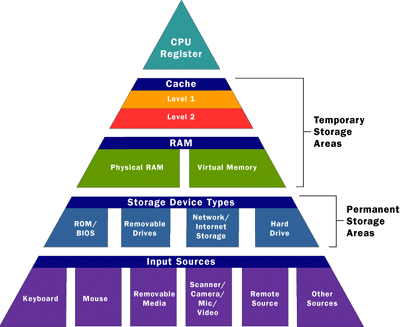

Hello Today I will be explaining cache memory from scratch.After reading this post you will have clear understanding of following topics..
- What is Cache Memory
- How Cache works
- Why should you use it
- Cache types
What is Cache Memory
A Cache (Pronounced as “cash”) is a small and very fast temporary storage memory. It is designed to speed up the transfer of data and instructions. It is located inside or close to the CPU chip. It is faster than RAM and the data/instructions that are most recently or most frequently used by CPU are stored in cache.
How Cache works
The data and instructions are retrieved from RAM when CPU uses them for the first time. A copy of that data or instructions is stored in cache. The next time the CPU needs that data or instructions, it first looks in cache. If the required data is found there, it is retrieved from cache memory instead of main memory. It speeds up the working of CPU.
Why you should use it
As you have noted that function of Cache is to speed up the transfer of data from ram so that instead of accessing ram every time for next instruction the CPU looks for the data in Cache and there are very high probability that required data is already stored in cache therefor this process make the access time very less hence greater speed.
Types of Cache
A computer can have several different levels of cache memory. The level numbers refers to distance from CPU where Level 1 is the closest. All levels of cache memory are faster than RAM. The cache closest to CPU is always faster but generally costs more and stores less data then other level of cache. 
Level 1 (L1) Cache::
It is also called primary or internal cache. It is built directly into the processor chip. It has small capacity from 8 Km to 128 Kb.
Level 2 (L2) Cache::
It is slower than L1 cache. Its storage capacity is more, i-e. From 64 Kb to 16 MB. The current processors contain advanced transfer cache on processor chip that is a type of L2 cache. The common size of this cache is from 512 kb to 8 Mb.
Level 3 (L3) Cache::
This cache is separate from processor chip on the motherboard. It exists on the computer that uses L2 advanced transfer cache. It is slower than L1 and L2 cache. The personal computer often has up to 8 MB of L3 cache.